Problem of the Month (February 2008)
The problem of packing circles in circles is perhaps the best studied problem in packing. Some results can be found on my packing page. This month we modify the problem slightly. What is the largest circle of radius r with the property that we can pack n unit circles inside so that no more than k other larger circles will also fit? What if we use squares or equilateral triangles instead of circles?
ANSWERS
Here is a summary of the radii of the largest known circles.
Placing n Circles So That k More Fit
| n \ k | 0 | 1 | 2 | 3 | 4 | 5 | 6 | 7
|
| 0 | 1 | 2 | 2/√3 + 1
= 2.154+ | √2 + 1
= 2.414+ | 2.701+ | 3 | 3 | 3.304+
|
|---|
| 1 | 3 | 3 | 3 | 3 | 3.145+ | 3.395+
|
|---|
| 2 | 3 | 3 | √5 + 1
= 3.236+ | 3.467+ | √3 + 2
= 3.732+
|
|---|
| 3 | 4/√3 + 1
= 3.309+ | 3.529+ | 3.782+ | 4.030+ | 2√(7/3) + 1
= 4.055+
|
|---|
| 4 | 2√2 + 1
= 3.828+ | 4.031+ | 4.093+ | 4.169+ | 4.372+
|
|---|
| 5 | 4.278+
(GT) | 4.402+
|
|---|
| 6 | √13 + 1
= 4.605+
|
|---|
| 7 | 5
|
|---|
All the circles shown have radius 1, so after we place the n orange circles, no larger circles will fit.
Placing n Circles So That 0 More Fit
n=0
r = 1
| n=1
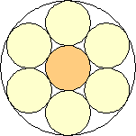
r = 3
| n=3
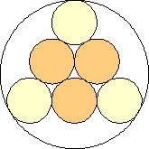
r = 4/√3 + 1 = 3.309+
| n=4
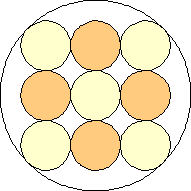
r = 2√2 + 1 = 3.828+
|
n=5
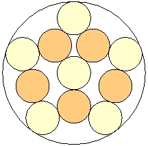
r = 4.278+
(Gavin Theobald)
| n=6
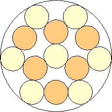
r = √13 + 1 = 4.605+
| n=7
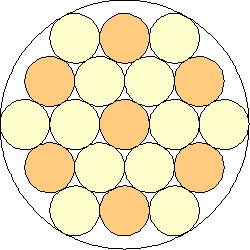
r = 5
|
|
Placing n Circles So That 1 More Fits
n=0
r = 2
| n=1
r = 3
| n=3
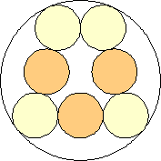
r = 3.529+
|
n=4
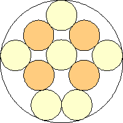
r = 4.031+
| n=5
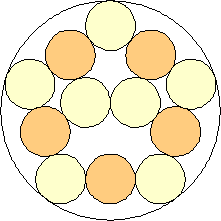
r = 4.402+
|
|
Placing n Circles So That 2 More Fit
n=0
r = 2/√3 + 1 = 2.154+
| n=1
r = 3
| n=2
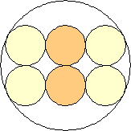
r = √5 + 1 = 3.236+
|
n=3
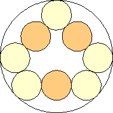
r = 3.782+
| n=4
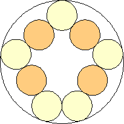
r = 4.093+
|
|
Placing n Circles So That 3 More Fit
n=0
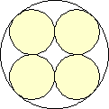
r = √2 + 1 = 2.414+
| n=1
r = 3
| n=2
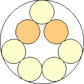
r = 3.467+
|
n=3
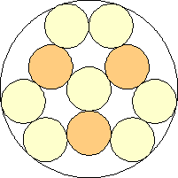
r = 4.030+
| n=4
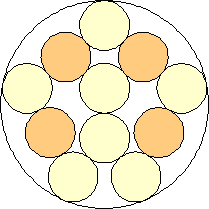
r = 4.169+
|
|
Placing n Circles So That 4 More Fit
n=0
r = 2.701+
| n=1
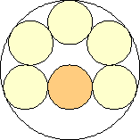
r = 3.145+
| n=2
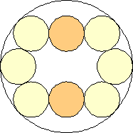
r = √3 + 2 = 3.732+
|
n=3
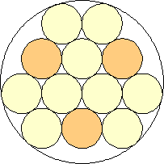
r = 2√(7/3) + 1 = 4.055+
| n=4
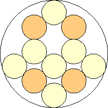
r = 4.372+
|
|
Placing n Circles So That 5 More Fit
n=0
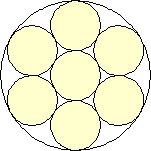
r = 3
| n=1
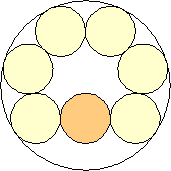
r = 3.395+
|
|
If you can extend any of these results, please
e-mail me.
Click here to go back to Math Magic. Last updated 3/1/08.